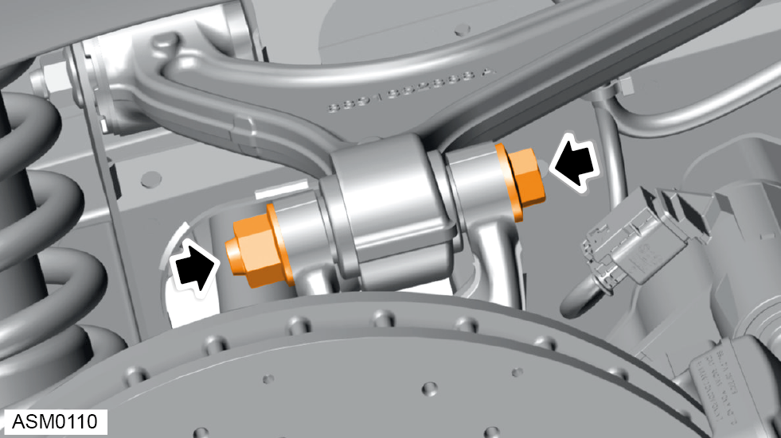
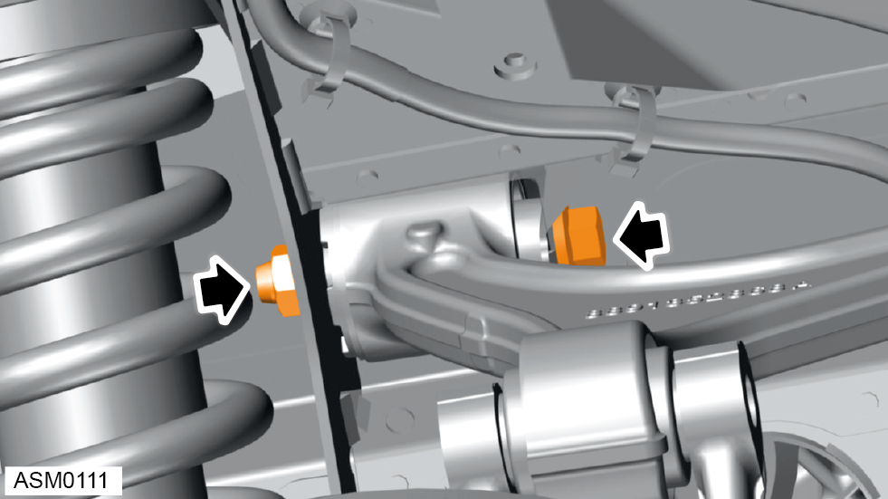
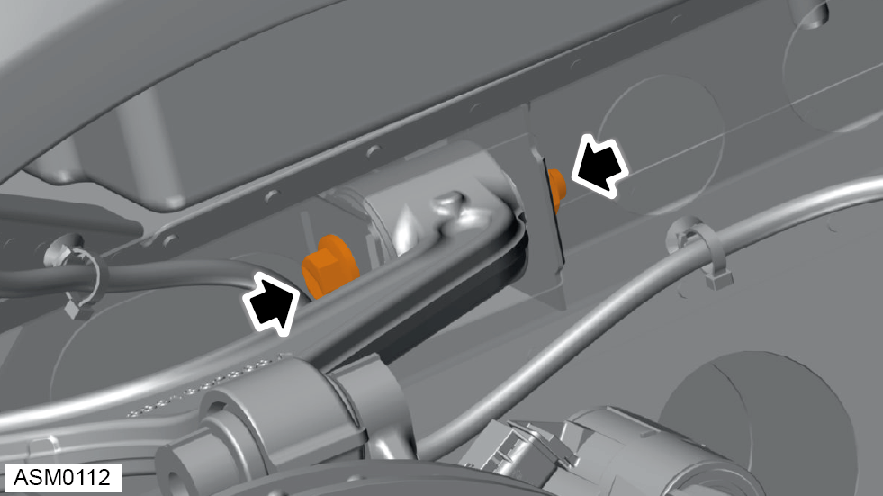
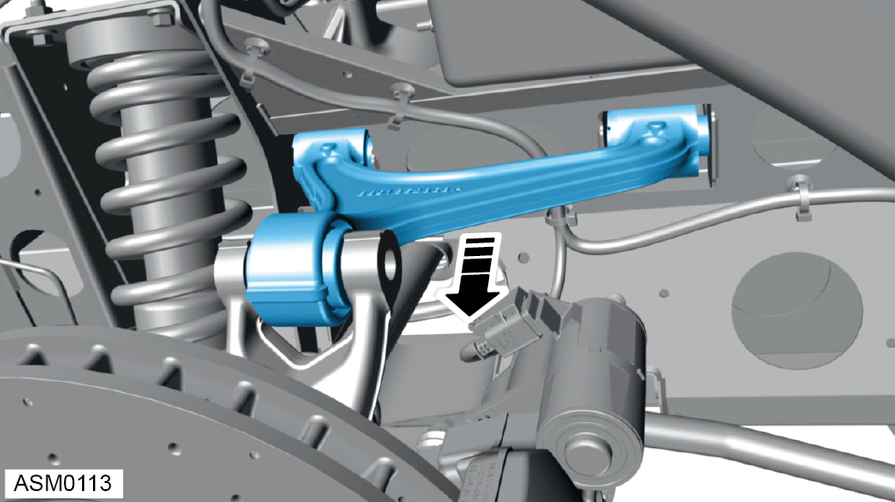

Upper Wishbone - Rear- Left Side
Print
Operation Code: 31.03.16-02
Removal
- Remove rear wheel arch liner. Refer to procedure.

- Remove M14x100 bolt and discard torque nut securing upper wishbone to hub. Torque 190 Nm.

- Remove M12x85 bolt and discard nut torque securing rear of upper wishbone to vehicle. Torque 105 Nm.
NOTE: Bolts securing upper wishbone to subframe are both oriented rearwards on 4 cylinder models, and point away from each other on V6 models.

- Remove M12x85 bolt and discard torque nut securing front of upper wishbone to vehicle. Torque 105 Nm.
NOTE: Always record quantity and fitted position of washers.

- Remove upper wishbone.
Installation
- Installation is the reverse of removal procedure except for the following:
- Renew all torque nut fixings that have been removed during removal procedure.
- Only torque tighten wishbone bolts once vehicle is in the normal ride height position.
- Perform a rear suspension geometry inspection and adjustment. Refer to procedure.